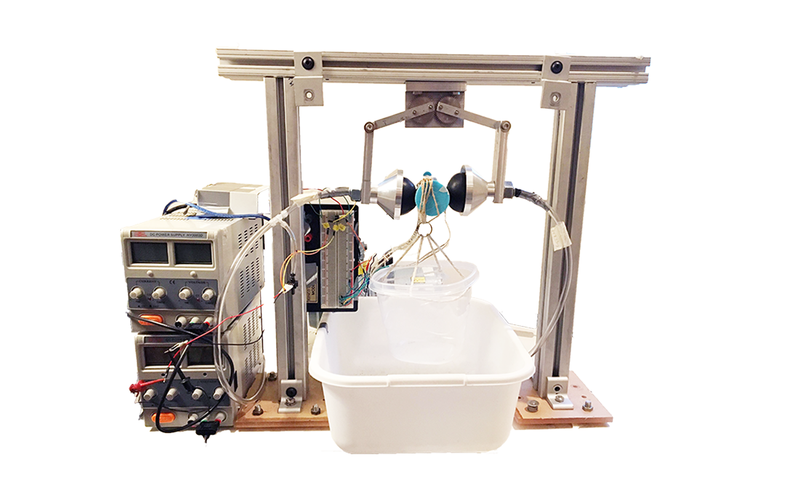
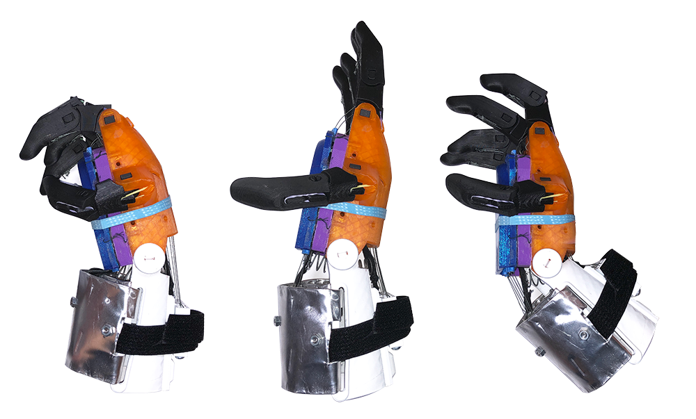

Particle-Jamming Soft Robotic Gripper
- 

Gripping is a vital task for robots in manufacturing lines and surgical procedures. Soft robotics is a developing technology which can solve problems such as picking up fragile and irregularly shaped objects which rigid grippers struggle with.
For my senior design project, my team created a particle-jamming soft robotic gripper, which uses grain-packing to pick up fragile and irregularly shaped objects with significant holding power.
For this project, I designed, CAD, machined, fabricated and assembled all parts. Parts are made to fit onto an 80/20 frame with two degrees of freedom.
- Date: August - December 2018
- More technical information here
Apollo: Makeathon Project Winner
- 


Our challenge for Apollo was to design and model an improved prosthetic arm that incorporates an extension based hand grip mechanism while maintaining a user-friendly design. Our design enables kids grip in a hyperextended motion to enable children to live a normal life, where they can play sports, put on clothes, eat with utensils, etc.
During the 48-hour competition, I designed and 3D-printed all the plastic pieces made on NX Siemens, which are reliable, durable, comfortable, and lightweight. The prototype is made primarily using 3D-printed plastic, aluminum, velcro, and fishing line. After presenting our final prototype, we won a $500 prize.
- Hosted by: Associated Students of Biomedical Engineering
- Date: February 2018
- Makeathon Website: www.uscmakeathon.com
EXO: Makeathon Winner

For astronauts on long flight missions, broken bones can become a serious issue due to space and payload constraints.
To solve this problem, my team of five created EXO, a multipurpose splint that treats, diagnoses, and rehabilitates astronauts with broken bones or muscle atrophy. EXO uses a simple and modular design, can be used for multiple types of injuries, and is easy to self apply. During our 48-hour competition, we designed an adaptable splint in SolidWorks to fit material and functional restraints and prototyped using hand assembly. We presented our design and prototyping process to a panel of judges and won a $500 prize.
- Hosted by: Associated Students of Biomedical Engineering
- Date: February 2016
- Makeathon Website: www.uscmakeathon.com
Brew
Food's always been a huge part of my life. And as a college student, coffee is a big part of my life, but sometimes I don't want just coffee, but rather espresso! Making espresso usually requires a pricey machine at home, but I wanted something light and portable, and so did the many college students we surveyed.
To that goal, I designed a portable espresso maker, completely mechanically powered using threads and compression. Working in a team of three, my team created all the mechanical components on SolidWorks to manufacturer constraints and prototyped them on 3D printer.
- Role: Project Co-Leader
- Date: May 2017 - Present
Terra

Foot drop is the inability to raise the front of the foot and can affect natural gait. The solution is usually to use a brace, but many of the current brace solutions are extremely uncomfortable or prevent any ankle movement.
In a 48-hour sprint, my team and I designed and modeled Terra, an ankle-foot orthotic that incorporates both mechanical and electrical components. Using 3D printers, laser cutters, and hand assembly, we created the first prototype of Terra. We modeled haptic feedback using pressure sensors to promote natural gait on an Arduino and heavily focused on making a comfortable orthotic that was lightweight and adaptable to any patient.
- Hosted by: Associated Students of Biomedical Engineering
- Date: February 2017
- Makeathon Website: www.uscmakeathon.com
Computer-Aided Design (CAD) Models
Racecar


My team and I designed a functional racecar in Siemens NX in order to help the USC Racing Team for their annual FSAE competition. The wheels, seat, body panels, engine, fuel tank, and steering mechanism were each measured to fit a 95th percentile man and assembled over the course of three weeks.
Pictured:- For: AME 308 (Computer Aided Design) Class Project
- Date: December 2017
Computer Mouse